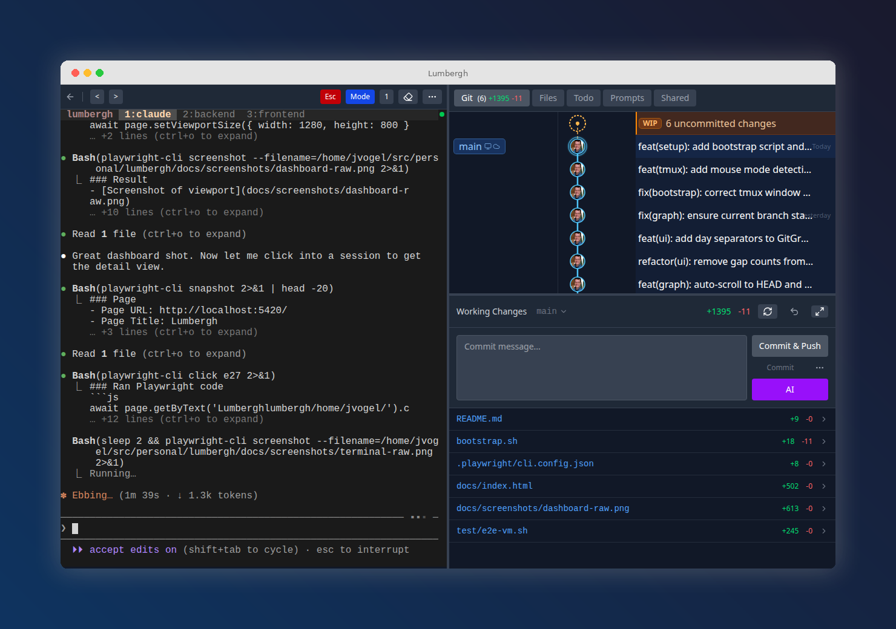
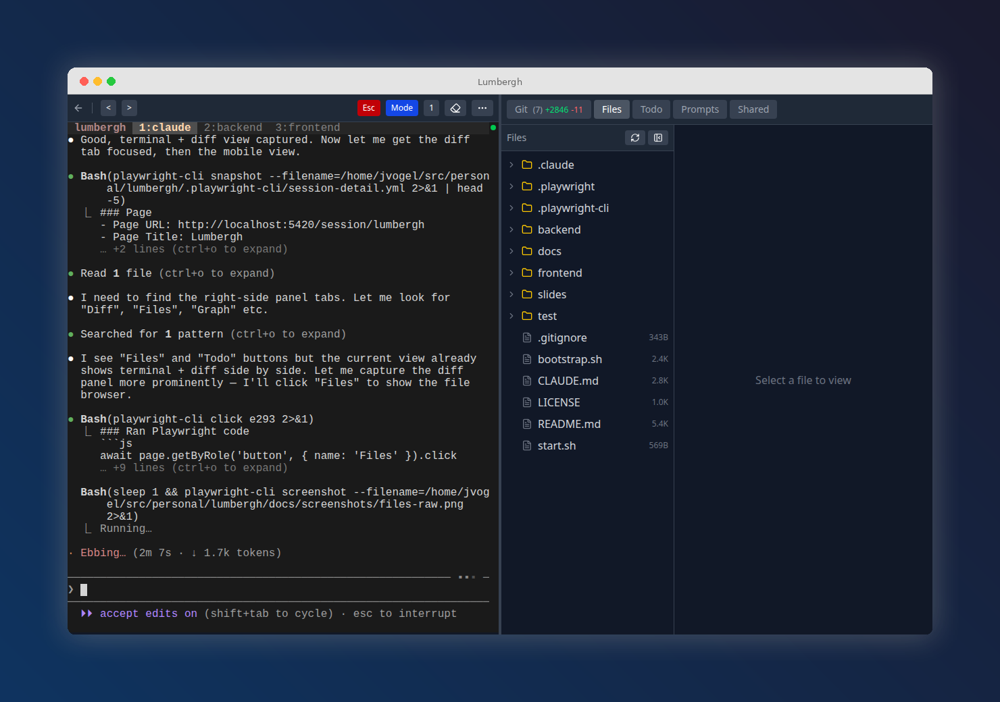
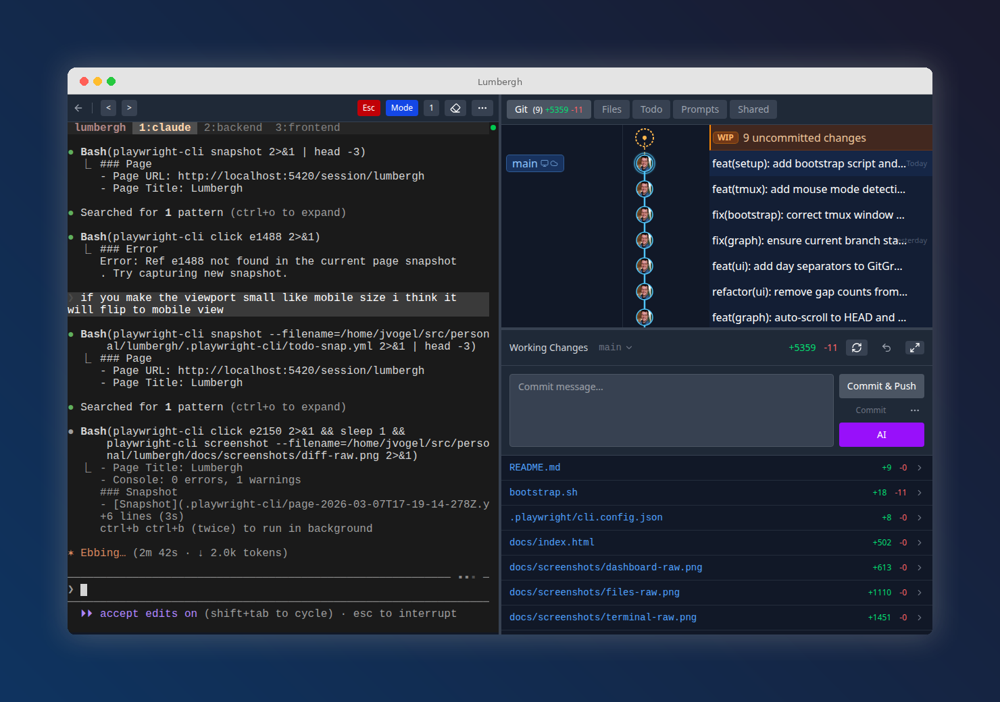
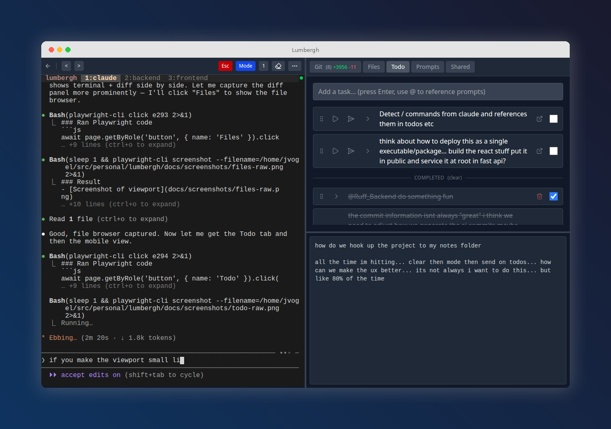
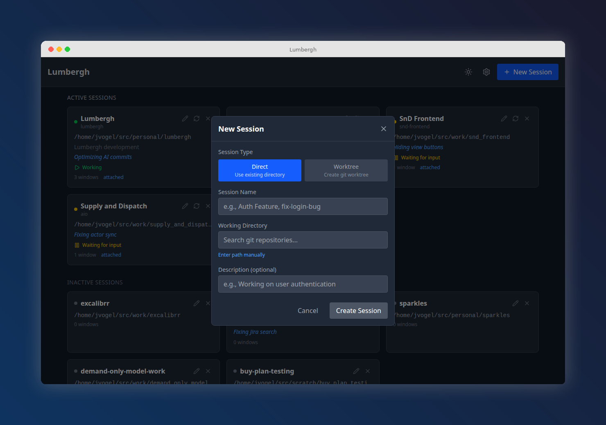
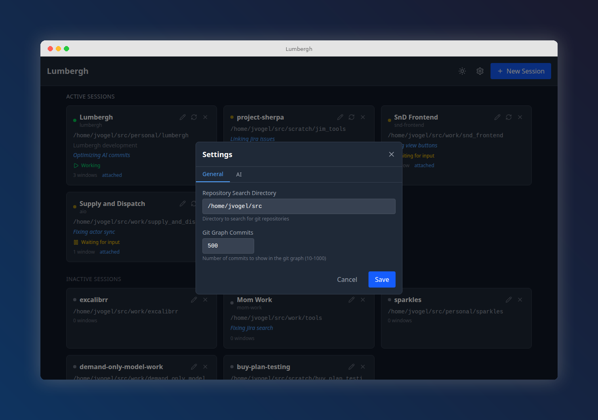
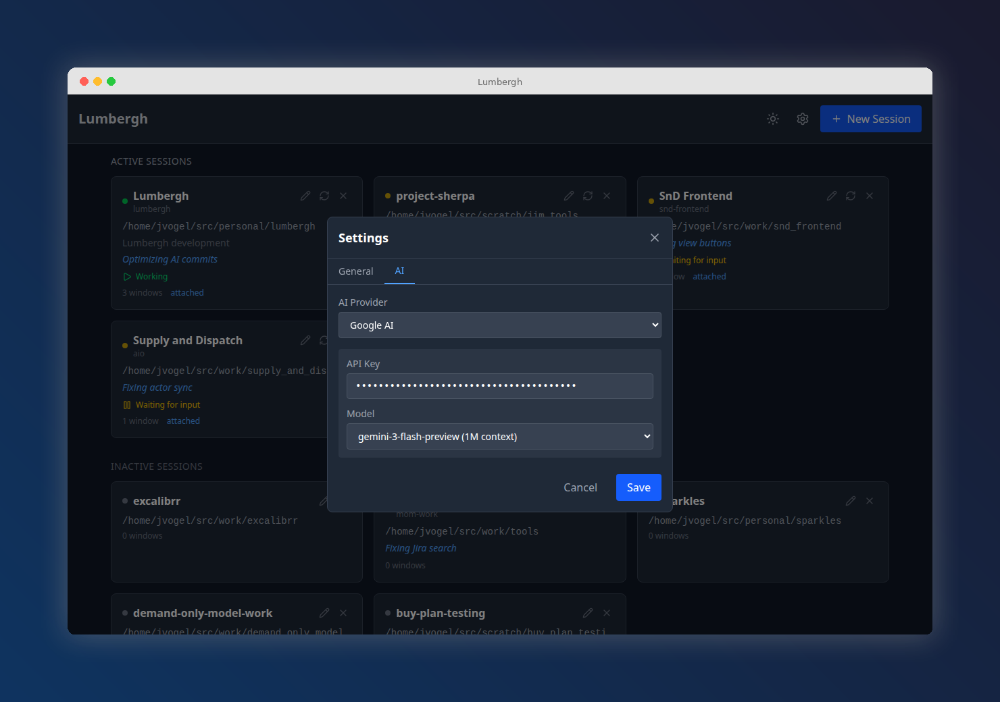
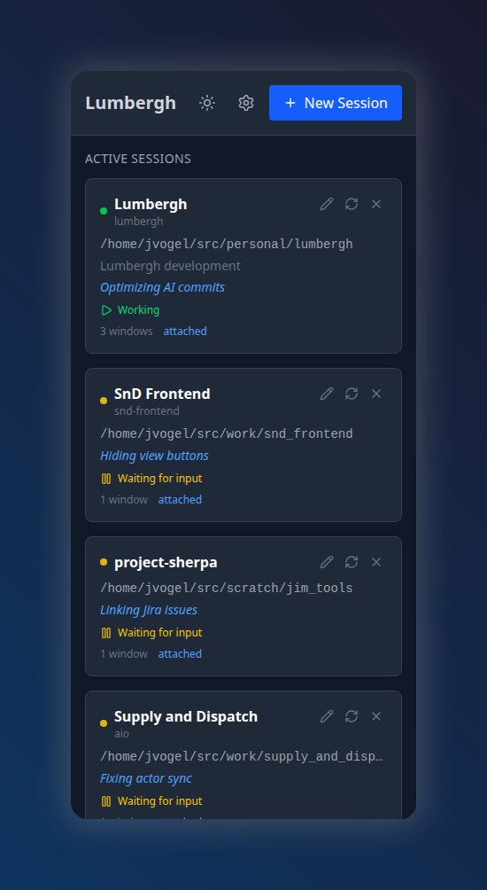
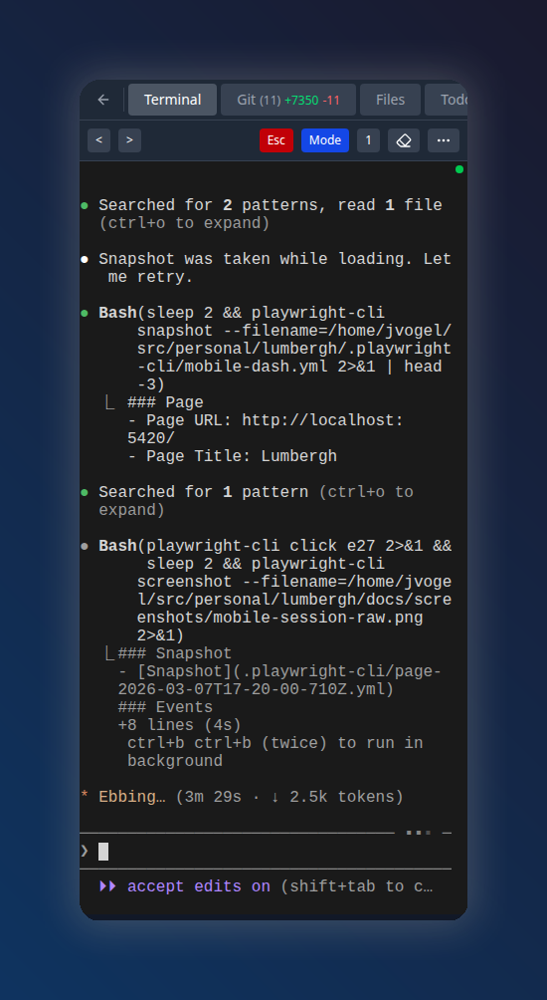

What You Get
Live Terminals
Stream and interact with real terminal sessions via xterm.js and WebSockets.
Git Diff Viewer
Watch diffs, commits, and branch changes in real time as the AI works.
Git Graph
Interactive commit graph visualization per session.
File Browser
Browse project files with syntax highlighting, right from the dashboard.
Multi-Session
Run and monitor multiple Claude Code sessions from a single dashboard.
Todos & Notes
Per-project todo lists and scratchpads to keep your sessions organized.
Prompt Templates
Reusable prompts with variables. Fire them at any session with one click.
Manager AI
Built-in AI chat pane for reviewing and coordinating work across sessions.
Mobile-First
Responsive design + PWA support. Install it on your phone or tablet.
See It In Action




1. Install & Launch
-
Install the prerequisites
You just need tmux and git:
sudo apt install tmux git # Debian/Ubuntu brew install tmux git # macOS -
Install Lumbergh
With uv (recommended):
uv tool install pylumberghOr with pip:
pip install pylumbergh -
Run it
lumberghOpen
http://localhost:8420in your browser. That's it.
Lumbergh works great inside WSL (Windows Subsystem for Linux). Install WSL with wsl --install from PowerShell, then follow the Linux instructions above inside your WSL terminal. Access the dashboard from your Windows browser at http://localhost:8420 — WSL forwards ports automatically.
Clone the repo and use the bootstrap script instead: git clone https://github.com/voglster/lumbergh.git && cd lumbergh && ./bootstrap.sh. This sets up a full dev environment with hot-reloading frontend and backend. You'll also need uv, Node.js, and Claude Code.
2. Using Lumbergh
The Dashboard
The home page shows all your sessions as cards, split into Active and Inactive groups. Each card shows:
- Session status (working, waiting for input, idle, error)
- What the AI is currently doing — auto-detected from terminal activity
- Number of tmux windows and whether a client is attached
- Quick actions: edit, reset, or delete the session
Click any card to open the session detail view.
Terminal Tips
Since tmux captures mouse events, you need to hold Shift while clicking and dragging to select text in the browser terminal. Shift+click bypasses tmux and lets your browser handle selection normally. This applies to copy and paste too — use Shift+Right-click for the browser context menu.
Session Detail Tabs
Each session has a left pane (terminal) and a right pane with these tabs:
- Git — live diff viewer showing unstaged changes, staged changes, and recent commit history. See line-by-line additions and deletions as the AI writes code.
- Files — browse the project file tree with syntax-highlighted previews. Select code to send as context to the terminal.
- Todo — per-project task list. Add tasks, check them off, drag to reorder. Great for tracking what you've asked the AI to do.
- Prompts — reusable prompt templates (see below).
- Shared — files shared across sessions for cross-project context.
Quick Input Bar
The input bar at the bottom of the terminal lets you type and send text to the active session. You can choose to send text only (for composing multi-line input) or send with Enter to execute immediately. Switch between tmux windows using the window selector buttons.
Creating Sessions
Click "+ New Session" on the dashboard. There are two modes:
- Direct — point at any existing working directory. Give it a name, pick the directory using the repo finder (searches your configured repo directory), and optionally add a description.
- Worktree — create a git worktree from an existing repo. Pick the parent repo, choose an existing branch or create a new one, and Lumbergh sets up the worktree automatically. Great for running parallel feature branches.
Lumbergh auto-generates a URL-safe session ID from the name (e.g., "Auth Feature" becomes auth-feature) and creates the tmux session for you.

Prompt Templates
Build a library of reusable prompts to fire at any session with one click. Templates support two scopes:
- Project — templates specific to one session/project.
- Global — available across all sessions. Promote any project template to global with one click.
In edit mode you can reorder templates via drag-and-drop, move between scopes, and delete. Templates persist across restarts.
If you're developing and prefer to manage servers yourself, run ./start.sh (or ./backend/start.sh and ./frontend/start.sh separately). The Vite dev server runs on :5420 with hot reload; the production install (lumbergh) serves everything on :8420.
3. Configuration
Click the gear icon in the top-right corner of the dashboard to open Settings.
General Settings
- Repository search directory — the root path Lumbergh scans to find git repos when creating sessions (defaults to
~/src). Set this to wherever you keep your projects. - Git graph commits — how many commits to load in the graph visualization (10–1000, default 100).

AI Provider Setup
Lumbergh uses AI to auto-detect what each session is working on and to generate context-aware commit summaries. Configure an AI provider in the AI tab of Settings. Supported providers:
| Provider | What You Need |
|---|---|
| Ollama (local) | Base URL (default http://localhost:11434). Models auto-discovered. |
| OpenAI | API key. Models: gpt-4o, gpt-4o-mini, gpt-4-turbo, gpt-3.5-turbo. |
| Anthropic | API key. Models: Claude Sonnet, Opus, Haiku. |
| Google AI | API key. Models: Gemini Flash, Gemini Flash Lite. |
| OpenAI Compatible | Base URL + optional API key. Use with any OpenAI-compatible endpoint. |

AI is used for short summaries and status detection, not complex reasoning. A small local Ollama model or gpt-4o-mini works great and keeps costs near zero.
What the AI does
- Session status — reads terminal output to detect if the AI is working, waiting for input, idle, or in an error state. This powers the status indicators on dashboard cards.
- Activity summaries — generates a short description of what each session is currently doing (e.g., "Fixing actor sync", "Hiding view buttons").
- Commit context — summarizes recent commits using conventional commit format for the diff viewer.
Dark Mode / Light Mode
Toggle between dark and light themes using the sun/moon icon in the top-right corner of the dashboard. Your preference is saved to local storage and persists across sessions. Theme applies to everything including syntax highlighting, diff colors, and the git graph.

Data Storage
All data lives in ~/.config/lumbergh/:
sessions.json— session registry (names, workdirs, descriptions)session_data/<name>.json— per-session data (todos, scratchpad)settings.json— AI provider config, repo search pathglobal.json— global prompt templatesshared/— shared files accessible from all sessions
No database server needed — it's all flat JSON files via TinyDB.
4. Use From Your Phone
Lumbergh is designed to be used from a phone or tablet. The UI is fully responsive and supports installation as a PWA (Progressive Web App).


Secure Remote Access with Tailscale
The recommended way to access Lumbergh from your phone is via Tailscale, which gives you a private, encrypted connection without exposing ports to the internet.
-
Install Tailscale
Install on both your server and your phone/tablet. It's free for personal use.
-
Connect and browse
Open
http://<your-tailscale-ip>:8420on your phone. That's it. -
Install as PWA (optional)
In your mobile browser, tap "Add to Home Screen" for an app-like experience with no browser chrome.
Lumbergh has no login system — it trusts your network. Don't expose it directly to the public internet. Use Tailscale or an SSH tunnel for remote access.
Troubleshooting
Terminal not connecting?
Make sure tmux mouse mode is on: tmux set -g mouse on. The bootstrap script does this automatically, but if you started manually you may need to set it.
Port already in use?
Lumbergh runs on :8420 by default. Use lumbergh -p 9000 to pick a different port. In dev mode, the backend runs on :8420 and the Vite frontend on :5420.
Dependencies not installing?
Run ./bootstrap.sh again — it will tell you exactly what's missing. For Node issues, make sure nvm is loaded in your shell (source ~/.nvm/nvm.sh).